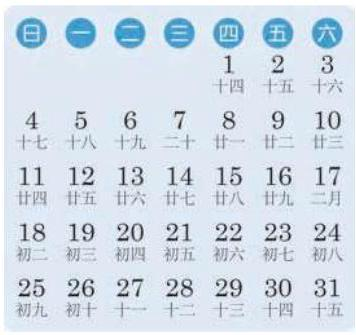
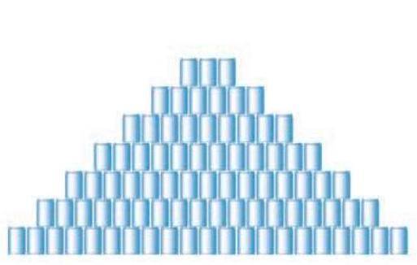
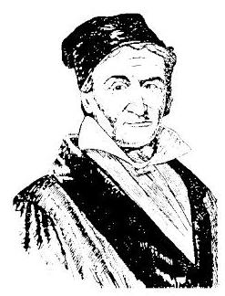
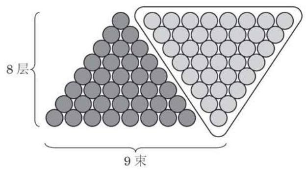

例题 1
例 1 已知等差数列 .
(1)求该等差数列的第 20 项；
(2)一401 是不是该等差数列的项？如果是, 指明是第几项; 如果不是, 请说明理由.
由三个数组成的等差数列可以看成最简单的等差数列.
如果三个数成等差数列, 那么等差中项必等于其前后两项的算术平均数.
学生阅读版 / 沪教版高中数学
选择性必修第一册
第4章数列 · 保留教材主线与原题
教材与正式教参整合
对数列的研究是基于现实生产、生活的需要. 例如, 在若干离散的时间节点, 记录某种数量的变化, 并按时间先后顺序排列起来就得到一个数列. 数列是一个重要的数学概念, 上至一个国家每年的国内生产总值 (GDP)，下至一个人每年的身高或体重，都可以用数列表示. 数列也是学习微积分的一个必要的基础. 本章采用从特殊到一般、从具体到抽象的方法, 先研究两类特殊的数列——等差数列和等比数列, 再在此基础上研究一般的数列. 同时, 介绍数学归纳法这一与数列有关的重要方法, 并通过给出一个利用迭代序列求平方根的方法, 揭示算法在求近似解中的重要作用.
数列的一般形式可以记成
其中 是数列的第 项,下标 是 的序数. 上面的数列常简记为 .
观察以下数列, 看它们有什么共同的特点.
(1)月历(图 4-1-1)最后一列数依次为:
①

图 4-1-1

图 4-1-2
(2)按一定规律堆放在一起的食品罐头(图 4-1-2)，共堆放 7 层, 从下到上各层的罐头数依次为:
②
(3)全国统一的鞋号中，常见的成年女鞋的尺寸(单位:cm) 由小至大依次为:
③
可以看到, 对于数列①, 从第 2 项起, 每一项与其前一项的差都等于 7; 对于数列②, 从第 2 项起, 每一项与其前一项的差都等于 -3 ; 对于数列③，从第 2 项起，每一项与其前一项的差都等于 0.5 .
这些数列有一个共同特点: 从第 2 项起, 每一项与其前一项的差都等于同一个常数.
给定一个数列 . 若 是等差数列,由定义可得 ,从而 . 反之,若 ,则 ,即 ,从而 成等差数列.
如果等差数列 的首项为 ,公差为 ,由定义可得
从而
...
把这 个等式相加得
由此
例 1 已知等差数列 .
(1)求该等差数列的第 20 项；
(2)一401 是不是该等差数列的项？如果是, 指明是第几项; 如果不是, 请说明理由.
由三个数组成的等差数列可以看成最简单的等差数列.
如果三个数成等差数列, 那么等差中项必等于其前后两项的算术平均数.
例 2 假设体育场一角看台的座位从第 2 排起每一排都比前一排多相等数目的座位. 若第 3 排有 10 个座位, 第 9 排有 28 个座位, 则第 12 排有多少个座位?
例 3 已知 是数列 的通项公式,其中 和 均为常数. 试判断数列 是否为等差数列,并证明你的结论.
分析 为了判断 是否为等差数列,可以利用等差数列的定义,只要判断 的值是否为一个与 无关的常数即可.
A.0,1,3,5,7;
B. ;
C. ; D. .
(1)已知 ，求 ；
(2)已知 ，求 ；
(3)已知 ，求 .

高斯 (C. F. Gauss, 1777—1855) 德国数学家. 研究的内容涉及数学的诸多领域, 并对天文学和大地测量学的研究有突出贡献. 他在世界上享有崇高的声望，被誉为 “数学王子”.
据说 200 多年前, 著名数学家高斯的算术老师在课堂上曾经提出了下面的问题:
求 的值.
少年高斯用下面的方法迅速算出了正确的答案:
上述两式相加得: ?
所以，结果为 .
高斯的计算方法实际上解决了求等差数列 , 前 100 项和的问题.
事实上, 古代的中国人和希腊人也是这么求等差数列之和的. 例如, 宋朝数学家杨辉提出了一个问题: “今有圭垛草一堆, 顶上一束，底阔八束. 问共几束？答:36 束. ”他的计算方法可以用图 4-1-3 表示.

图 4-1-3
一般地,将数列 的前 项和记作 ,即
受高斯算法的启示,我们又可将 表示为
②
由①+②, 得
于是就可得到等差数列 的前 项和公式
由于 ,上述公式又可以写作
数列 的前 项和也可记作 ,即
此外, 根据乘法分配律可得
例 4 设数列 为等差数列,其前 项和为 .
特别地
(1)已知 ,求 ;
(2)已知 ,求 ;
(3)已知 ，求 .
例 5 已知等差数列 的前 10 项和 ,前 20 项和 ,由此可以确定数列 前 30 项和 吗?
例 6 已知数列 的前 项和为 .
(1)求数列 的通项公式；
(2)求证:数列 是等差数列.
(1)已知 ，求 ；
(2)已知 ，求 .
(1) 与 ；___
(2) 与 .
(1)已知 ，求 ；
(2)已知 ，求 ；
(3)已知 ，求 ；
(4)已知 ，求 .
(1)已知 ,求 及 ;
(2)已知 ，求 .
(1)已知 ,求 及 ;
(2)已知 ,求 及 ;
(3)已知 ,求 及 ;
(4)已知 ，求 及 .
(1)已知 ,求 ；
(2)已知 ，求 .
(1)已知 ，求 ；
(2)已知 ，求 ；
(3)已知 ，求 ；
(4)已知 ，求 .
9.《九章算术》中的”竹九节”问题: 现有一根 9 节的竹子, 自上而下各节的容积成等差数列. 若最上面 4 节的容积共 3 升, 最下面 3 节的容积共 4 升, 则第 5 节的容积为多少升?
1.(1)在等差数列 中，等式 是否都成立？
(2)在数列 中，如果对于任意的正整数 ，都有 ，那么数列 一定是等差数列吗?
(1)写出 的具体展开式，并求其值；
(2)用求和符号表示 ，并求其值.